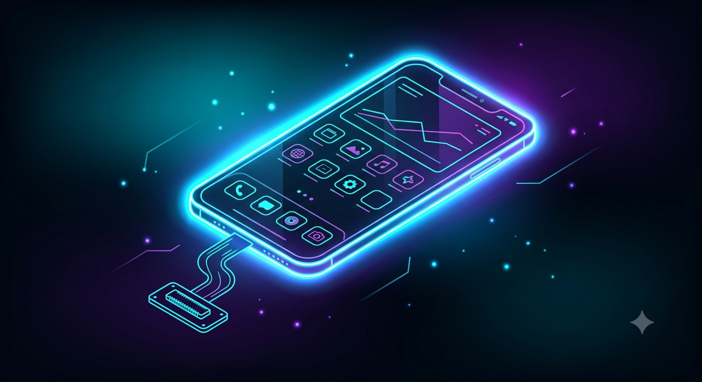
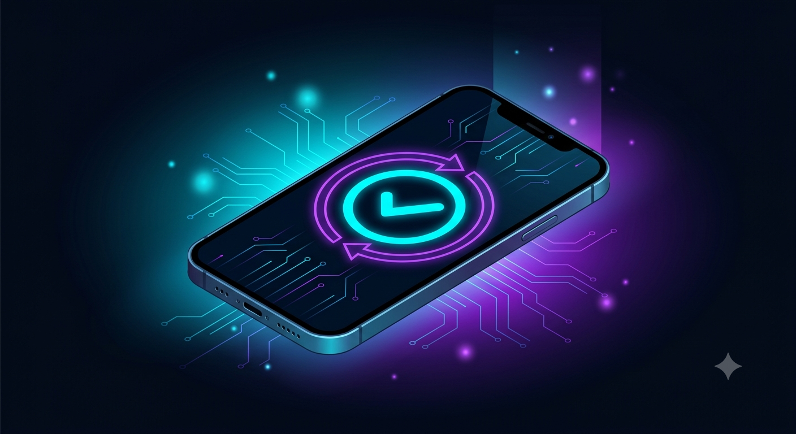
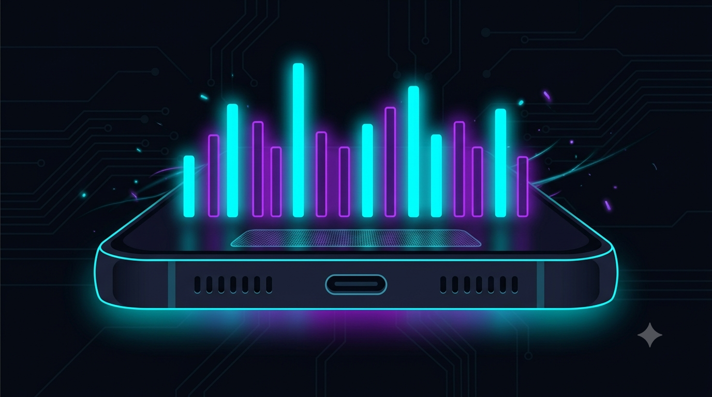
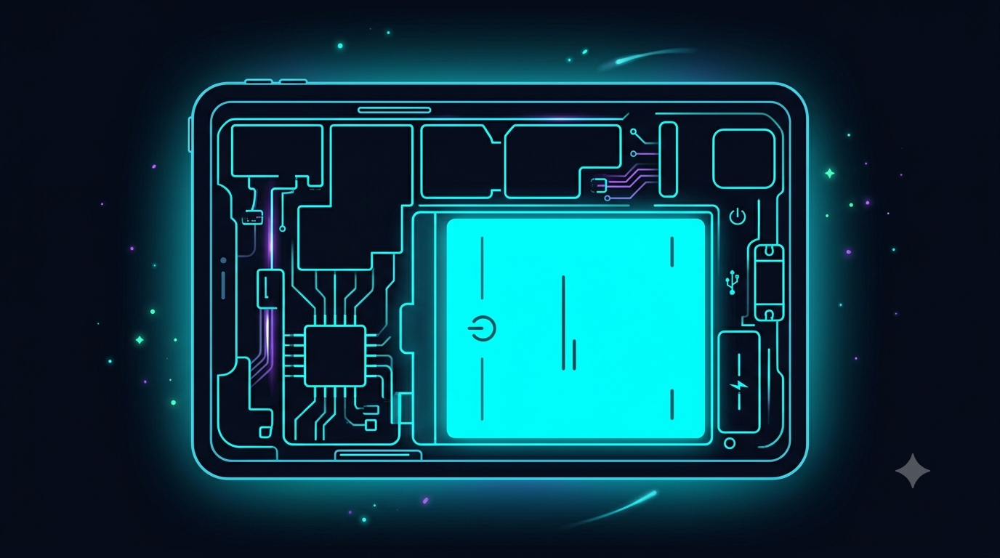
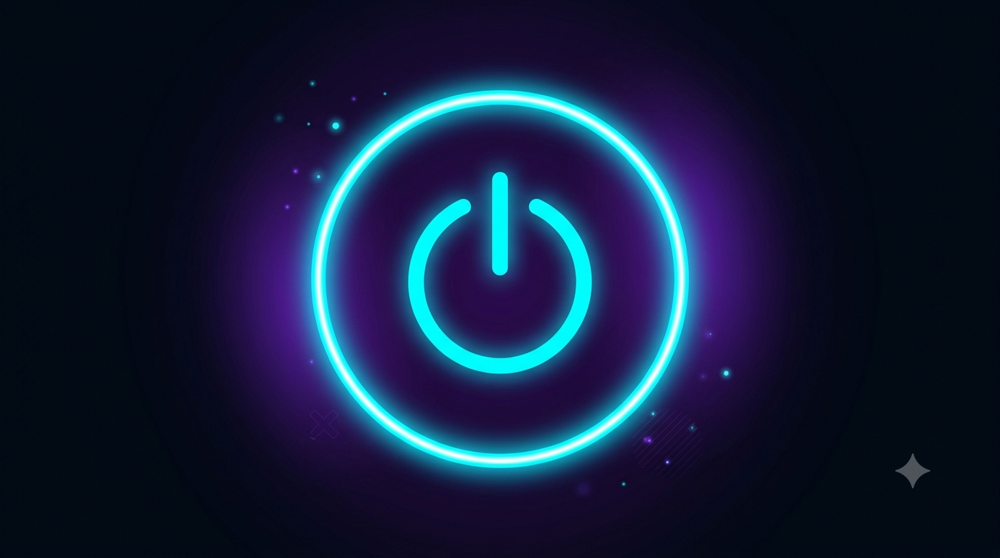
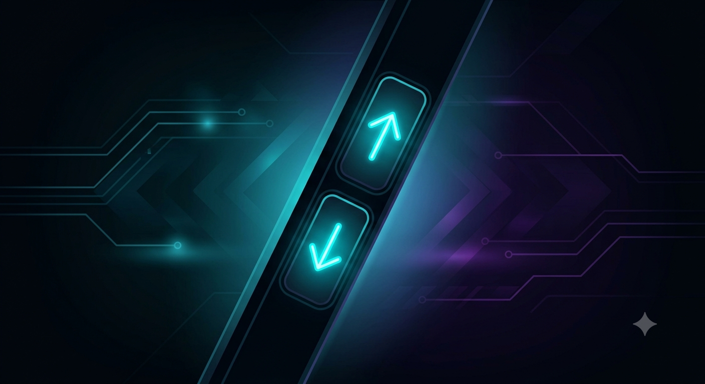

Catalogo Servizi Hardware
Protocolli ufficiali di diagnosi, sostituzione e micro-saldatura per Smartphone e Tablet.

Battery Replacement
Sostituzione celle ad alta densità con programmatore BMS per ripristinare il livello di salute 100% e cicli di carica originali.

Rigenerazione Display & Laser Cover
Rigenerazione del solo vetro anteriore su display OLED/AMOLED di ogni tipo e rimozione/sostituzione back cover posteriore in vetro tramite Laser Machine.

Screen Repair / Replacement
Sostituzione completa del blocco schermo (OLED/LCD) ad alta frequenza di aggiornamento con ricalibrazione del chip touch e del TrueTone/Haptic.

Charge Port Repair
Sostituzione o micro-saldatura del connettore USB-C / Lightning con verifica delle linee di ricarica rapida e chip controller Power Delivery.

Software Problems
Ripristino da loop d'avvio (Bootloop), debrick di sistema, recupero firmware corrotto e risoluzione blocchi software o aggiornamenti falliti.

Water-Damage Repair
Lavaggio ultrasuoni in bagno anidro della scheda madre, deossidazione chimica e ricostruzione delle piste corrose dall'acqua o dai liquidi.

Microphone / Speaker Repair
Sostituzione capsule auricolari, microfoni ambiente con cancellazione del rumore e speaker per la riproduzione audio stereo pulita.

Speaker Repair
Ripristino altoparlanti principali gracchianti o assenti, pulizia membrane acustiche e sostituzione moduli acustici dedicati.

Tablet Repair
Interventi dedicati su schermi di grandi dimensioni, sostituzione connettori saldati su scheda madre, batterie ad ampie celle e digitiizer touch.

Power Button Repair
Ripristino o sostituzione del flex interno del tasto d'accensione, compresi i sensori biometrici o impronte digitali (Touch ID/Biometric Flex).

Button Repair
Sostituzione switch meccanici per i tasti del volume, selettori Mute/Silenzioso e flex ribbon usurati o danneggiati da urti.

Case Repair
Raddrizzamento o sostituzione completa dello chassis/telaio in alluminio o titanio per garantire il corretto alloggiamento dei componenti interni.

Diagnostic Scan
Analisi completa del circuito integrato (PMIC), test di assorbimento in corrente continua, diagnosi termografica infrarossi e report dello stato dei componenti.